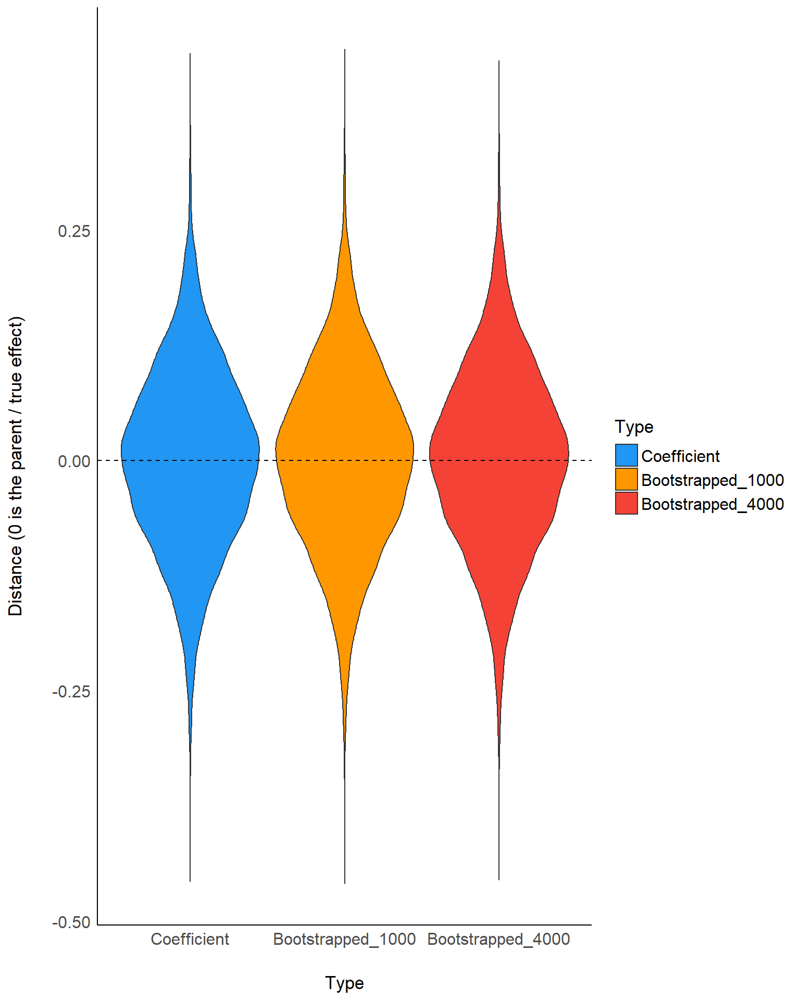

bootstrapping.RmdThe basic idea of bootstrapping is that inference about a parent population from sample data can be modelled by resampling the sample data. It is often used as an alternative to statistical inference based on the assumption of a parametric model when that assumption is in doubt, or where parametric inference is complicated.
In order to compare point-estimates with bootstrapped parameters for frequentist models. We generated one large sample (the parent population, size 1000000) of two continuous variables producing a regression coefficient of 0.5. We then iteratively extracted a subsample of size 30, computed 3 types of coefficient (regular, bootstrapped median with 1000 and 4000 iterations) that were substracted from the “parent” coefficient. The closer the value is from 0, and the closer it is from the “true” effect.
The data is available on githuband the code to generate it is available here.
library(see)
df_long <- df %>%
select(Coefficient, Bootstrapped_1000, Bootstrapped_4000) %>%
gather(Type, Distance) %>%
mutate(Type = forcats::fct_relevel(Type, c("Coefficient", "Bootstrapped_1000", "Bootstrapped_4000")))
df_long %>%
ggplot(aes(y = Distance, x = Type, fill = Type)) +
geom_violin() +
geom_hline(yintercept = 0, linetype = "dashed") +
scale_fill_manual(values = c("#2196F3", "#FF9800", "#f44336")) +
theme_modern() +
ylab("Distance (0 is the parent / true effect)")
library(BayesFactor)
library(bayestestR)
bayestestR::bayesfactor(BayesFactor::ttestBF(df$Coefficient))> # Bayes Factors for Model Comparison
>
> Model BF
> [2] Alt., r=0.707 0.02
>
> * Against Denominator: [1] Null, mu=0
> * Bayes Factor Type: JZS (BayesFactor)> # Bayes Factors for Model Comparison
>
> Model BF
> [2] Alt., r=0.707 0.02
>
> * Against Denominator: [1] Null, mu=0
> * Bayes Factor Type: JZS (BayesFactor)> # Bayes Factors for Model Comparison
>
> Model BF
> [2] Alt., r=0.707 0.02
>
> * Against Denominator: [1] Null, mu=0
> * Bayes Factor Type: JZS (BayesFactor)